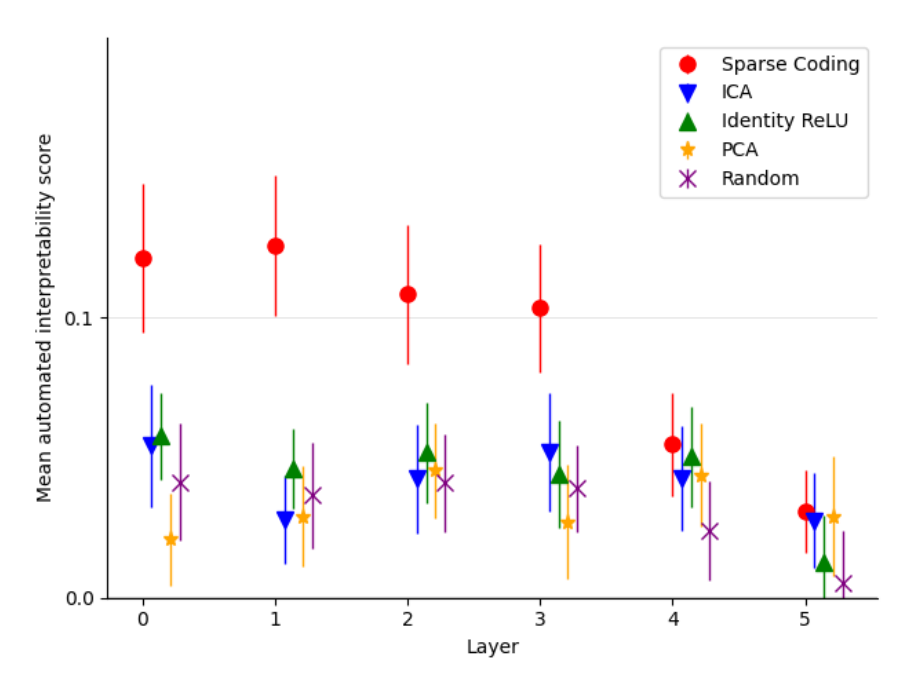

Random-only interpretability scores vs. baselines by layer

Reading the plot
Axes match the dictionary-size sweep -- layer 0-5 against mean autointerpretability score with uncertainty bars -- but here color distinguishes the decomposition method rather than dictionary size: Sparse Coding, the paper's learned features, against four baselines (ICA, PCA, Random directions, and Identity ReLU, the model's own default basis with negative activations zeroed out). Crucially, every score here uses the stricter random-only scoring variant, where text fragments are drawn purely at random rather than mixed with fragments chosen because a feature strongly activated there (Top-and-random vs. random-only interpretability scoring). Because features are sparse, a small random sample often contains no strongly activating example at all, compressing scores for every method toward zero relative to the top-and-random scores used elsewhere in the paper. The low absolute values here are an artifact of the harsher test, not evidence sparse coding got worse; the meaningful comparison is the gap between methods within this plot.
What the plot shows
Sparse Coding sits clearly above all four baselines at every layer, most visibly in layers 0-3, where it scores roughly 0.10-0.12 against baselines clustered around 0.02-0.06. The gap narrows at layers 4 and 5, where sparse coding falls to roughly 0.03-0.05 and several baselines drop close to zero. The four baselines are difficult to distinguish from each other anywhere in the plot, their uncertainty bars overlapping heavily. This is the paper's check against an artifact-of-top-scoring explanation for its results: even under this harsher, random-only test, learned features remain more interpretable than the baselines, especially in earlier layers (sparse-autoencoders, §"C.2 HIGH INTERPRETABILITY SCORES ARE NOT AN ARTEFACT OF TOP SCORING", p. 13).
Context
The paper follows this check with a further control restricting baselines to the same number of simultaneously active directions as sparse coding, to rule out an alternative explanation for the gap (Top-K-active baseline control). The baselines compared here are Independent Component Analysis (ICA), Principal Component Analysis (PCA), Default (neuron/residual-stream) basis baseline, and Random directions baseline, scored with the same underlying Autointerpretability score used throughout the paper.